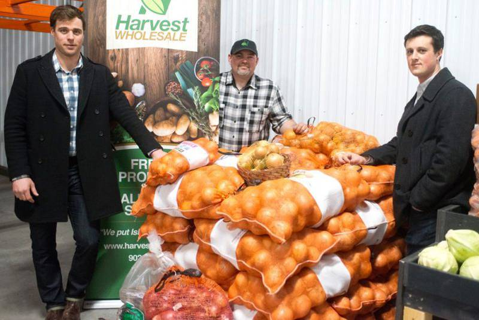

Some of my previous work
- 'The red lips don't belong on a reporter': P.E.I. journalist responds to flood of comments on her looks
Teresa Wright, political reporter - P.E.I. food wholesaler makes it easier to buy local products 
Some of the guys at Harvest Wholesale - The Fashion Of Bodybuilding
- I also predicted Russell Westbrook would win the NBA's Most Valuable Player award at the start of the 2016/17 season
Russell Westbrook for MVP. saying it right now.
— Conor McCarthy (@McCa_Conor) October 29, 2016